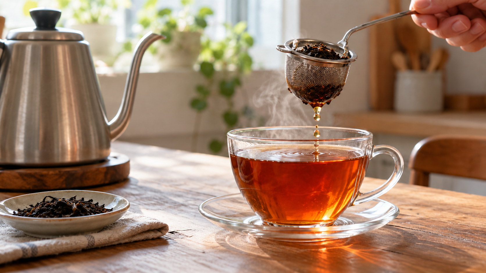

紅茶は湯温と時間で渋さが変わる？｜香りを楽しむいれ方
同じ茶葉なのに、ある日は香りがよく、別の日は口の中がきゅっと乾く。熱い湯を使ったことと、ティーバッグを入れっぱなしにしたことの、どちらが原因だろう。
結論は、紅茶の湯温と抽出時間を決め、時間が来たら茶葉を湯から出すこと。湯温を上げると出てくる成分は変わる。ただし、熱い湯や長い時間で、どの紅茶も必ず渋くなるとは言えない。
香りと渋さは、同じ速さで決まらない
茶葉を湯に浸すと、色をつくる成分、味に関わる成分、香りの成分が湯へ移る。この移り方を「抽出」という。湯温だけでなく、茶葉の細かさや茶葉と湯の量の比も、仕上がりに関わる。紅茶の抽出条件を調べた研究では、香りの成分と、湯に溶けるそれ以外の成分とで、強く影響する条件が違った。
渋さは、口の中が乾いて縮むような感覚だ。茶の成分と唾液との関わりが一因と考えられている。唾液の状態を変えて紅茶を飲んだ研究でも、同じ紅茶の渋さの感じ方が変わった。だから、カップの色の濃さだけでは渋さを言い当てられない。
研究では何が確かめられたか
トルコ式の紅茶を調べた研究では、湯温を上げると、色や茶の成分には明確な違いが出た。一方、調べた条件の範囲では、飲んで感じる渋さや風味に明確な差は出なかった。成分が多く出たことと、渋く感じることは、同じ結果ではないと分かる。
別の紅茶の研究は、湯温、時間、茶葉の細かさなどを一緒に調べ、香りも味の印象に関わることを示した。家庭では「高温なら失敗」と決めつけず、まず茶葉の量と時間をそろえて、好みに合わせて調整するのが現実的だ。研究ごとに茶葉といれ方が異なるため、どの製品にも通じる唯一の温度や時間は決められない。
まず一杯をいれる
紅茶の茶葉を約2〜3g、湯を約200mL用意する。ティーバッグなら製品が示す一杯分を使う。英国の紅茶・ハーブティー協会の目安では、紅茶の湯温は90〜98℃、抽出時間は種類によりおおむね3〜4分だ。製品の表示があれば、それを先に使おう。
- 湯を沸かし、熱い湯を扱えるカップへ注ぐ。温度を測れるなら90〜98℃を目安にする。注ぐときはやけどに気をつける。
- 茶葉またはティーバッグを入れ、ふたをして約3分待つ。時間が来たら茶葉を取り出す。濃いめが好みなら、次の一杯で製品表示の範囲内で時間を調整する。
- 香りを確かめ、飲める温度に冷ましてから味わう。抽出中に茶葉を入れっぱなしにしないと、毎回のいれ方をそろえやすい。
別の飲み物でも、色だけで決めない
茶葉の種類を変えたときや、ミルクを加える紅茶をいれるときも、まず製品が勧める茶葉の量、湯温、時間を見る。色が濃いほど渋いと決めず、香りと口当たりの両方で判断する。これはトルコ式紅茶の研究結果をすべての飲み物へ広げたものではなく、抽出条件と感じ方を分けて考えるための目安だ。
まとめ
まず湯温と時間を決め、茶葉を出す時刻を守ろう。紅茶の香りと渋さを考えるときは、色の濃さだけを頼りにしない。